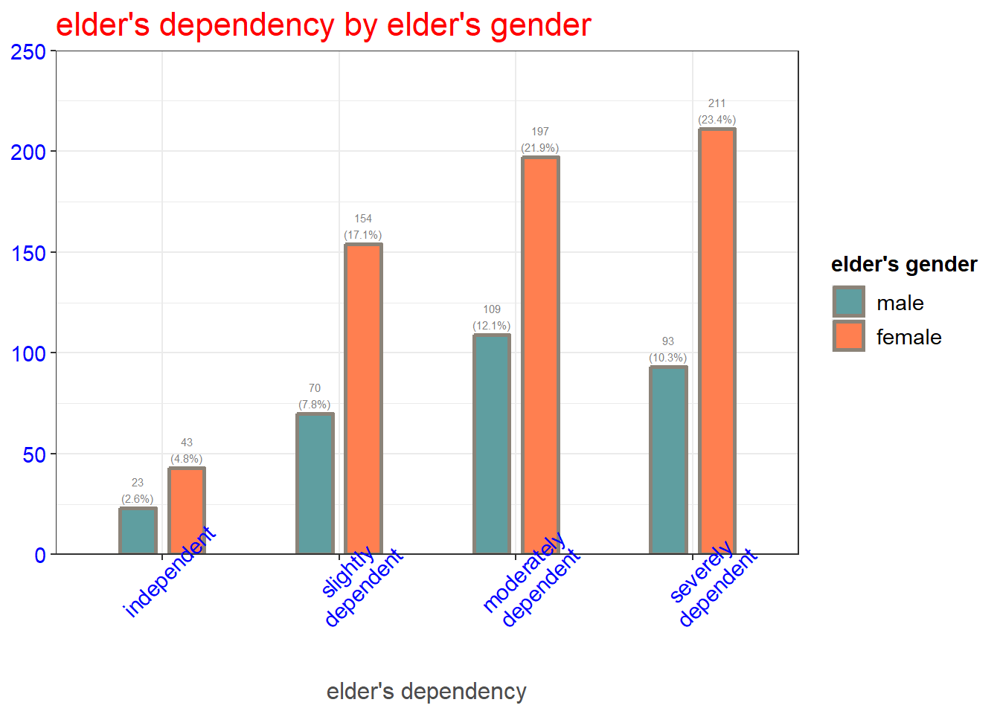
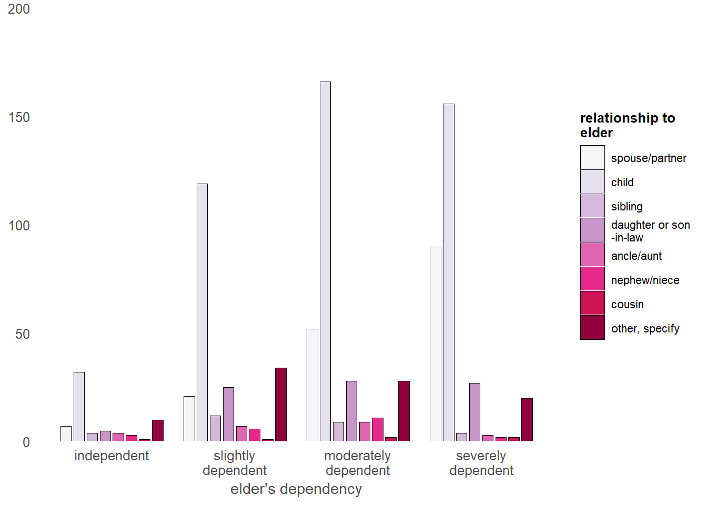
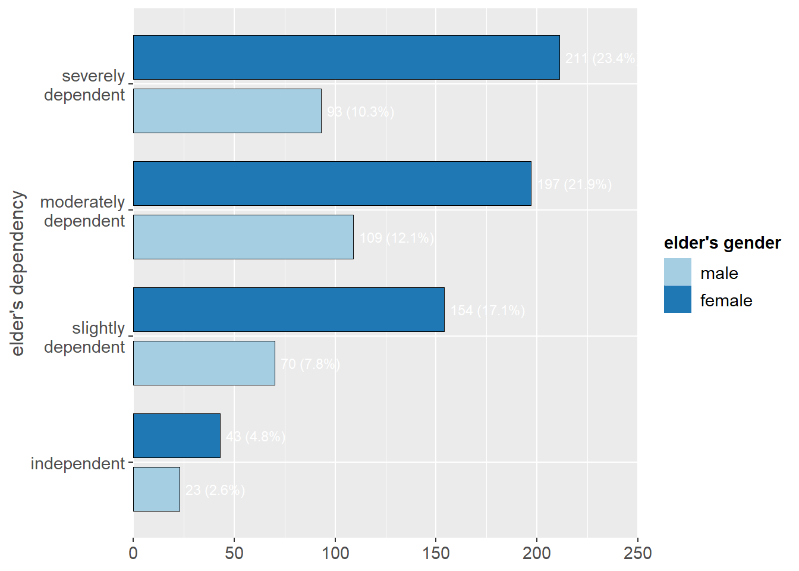
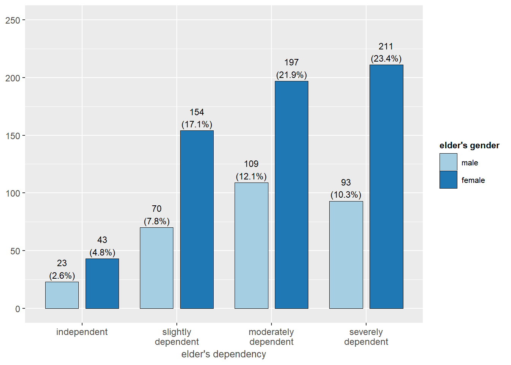
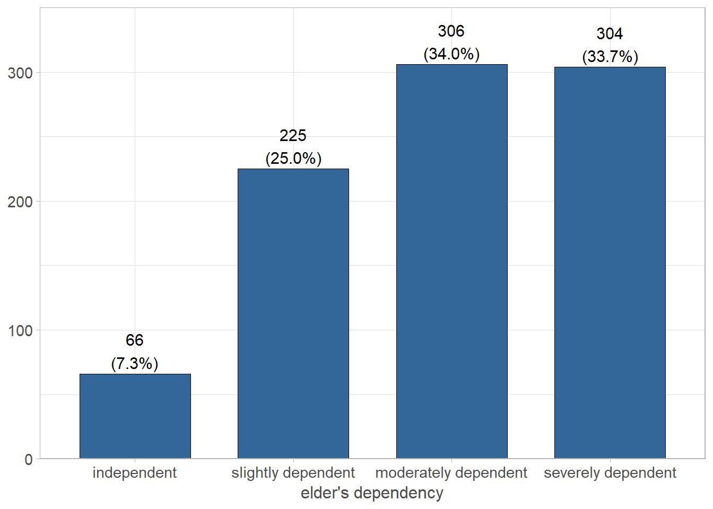
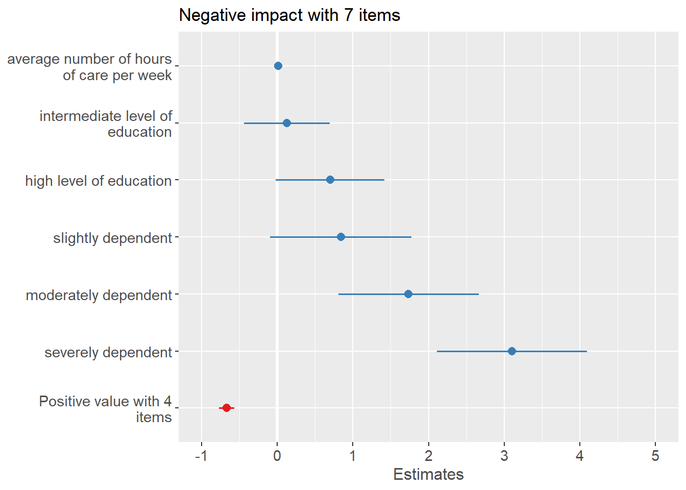
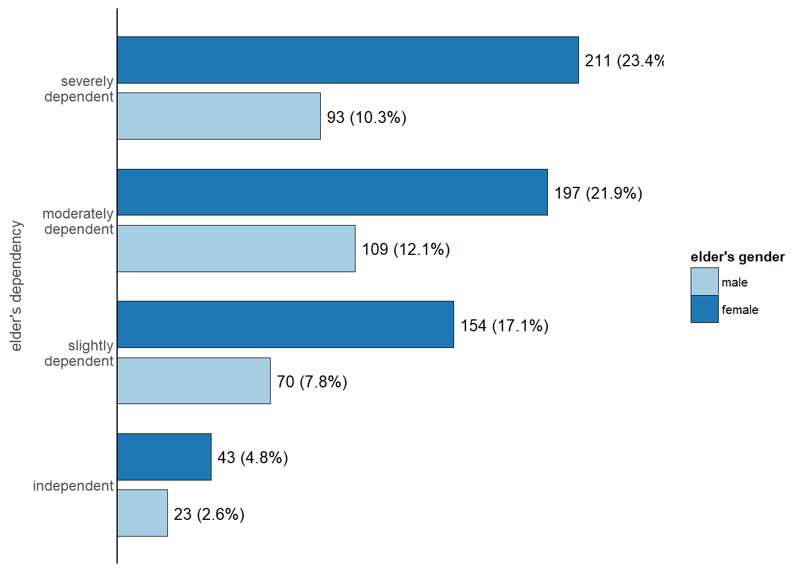
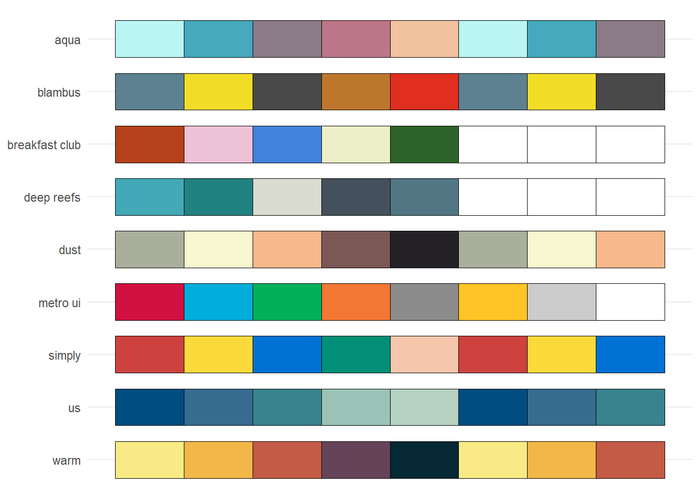
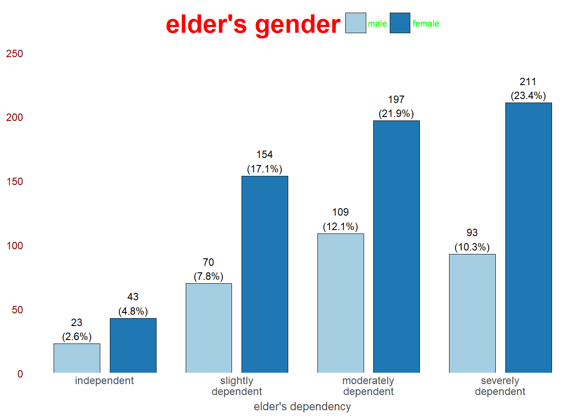

This vignette shows how the plots created by the sjp. functions of the sjPlot package can be customized.
The examples refer to the sjp.grpfrq function, but most arguments are similar across all plotting function of the sjPlot package.
The base function to globally change theme option for all sjp-function is set_theme(). Except for geom-colors and geom-sizes, all theme-options can be set via this function. This new theme will be applied to all following plots created with the sjPlot package.
There are various arguments to change colors, sizes, angles etc. of labels. Following example show changes to colors, sizes, angles, geom-outlines and theme.
# load libraries
library(sjPlot) # for plotting
library(sjmisc) # for sample data
library(ggplot2) # to access ggplot-themes
# load sample data set
data(efc)
set_theme(
geom.outline.color = "antiquewhite4",
geom.outline.size = 1,
geom.label.size = 2,
geom.label.color = "grey50",
title.color = "red",
title.size = 1.5,
axis.angle.x = 45,
axis.textcolor = "blue",
base = theme_bw()
)
sjp.grpfrq(
efc$e42dep,
efc$e16sex,
title = NULL,
geom.colors = c("cadetblue", "coral"),
geom.size = 0.4
)
All plotting functions support the usage of the Colorbrewer palettes. To apply a color brewer palette, use specify the palette as geom.colors. Any valid color brewer palette is recognized automatically.
# blank theme
set_theme(
base = theme_blank(),
axis.title.size = .9,
axis.textsize = .9,
legend.size = .7,
legend.title.size = .8,
geom.label.size = 3
)
sjp.grpfrq(
efc$e42dep,
efc$e15relat,
geom.colors = "PuRd",
show.values = FALSE
)
An overview of all supported color codes can be obtained with display.brewer.all() from the RColorBrewer package.
library(RColorBrewer)
display.brewer.all()The plot’s axes can be flipped using coord.flip = TRUE. If needed, labels can be placed inside the bars with the vjust or hjust arguments. In such cases, you might need to adjust the label colors with geom.label.color = "white".
set_theme(geom.label.color = "white", geom.label.size = 3)
# labels appear very large due to export metrics
sjp.grpfrq(efc$e42dep, efc$e16sex, coord.flip = TRUE)
Plots with no margins towards the axes may look strange to some people (not to me, though). To restore the ggplot-default behaviour, use the expand.grid argument:
sjp.grpfrq(efc$e42dep, efc$e16sex, expand.grid = TRUE)
You can use any pre-defined theme from ggplot, like theme_bw(), theme_classic() or theme_minimal() as default theme.

There is a set of pre-defined themes from the sjPlot-package. See ?"sjPlot-themes" for a complete list.
If you want to use a specific theme as base for building your own theme, use the base argument. When using base instead of theme, further arguments for settings colors etc. are not ignored.

Each plotting function invisibly returns the ggplot-object. You can further add options to customize the appearance of the plot, like in the following example, where the count axis is hidden (color set to white):
set_theme(
base = theme_classic(),
axis.tickslen = 0, # hides tick marks
axis.title.size = .9,
axis.textsize = .9,
legend.size = .7,
legend.title.size = .8,
geom.label.size = 3.5
)
sjp.grpfrq(
efc$e42dep,
efc$e16sex,
coord.flip = TRUE,
show.axis.values = FALSE,
prnt.plot = FALSE
)$plot +
theme(axis.line.x = element_line(color = "white"))
Note that the prnt.plot argument is set to FALSE in the above example, so the function call itself does not produce a plot (otherwise, two plots would be plotted).
The plot’s legend can be customized via various legend.-arguments, see following examples:
set_theme(
base = theme_classic(),
legend.title.face = "italic", # title font face
legend.inside = TRUE, # legend inside plot
legend.color = "grey50", # legend label color
legend.pos = "bottom right", # legend position inside plot
axis.title.size = .9,
axis.textsize = .9,
legend.size = .7,
legend.title.size = .8,
geom.label.size = 3
)
sjp.grpfrq(efc$e42dep, efc$e16sex, coord.flip = TRUE)
set_theme(
base = theme_classic(),
axis.linecolor = "white", # "remove" axis lines
axis.textcolor.y = "darkred", # set axis label text only for y axis
axis.tickslen = 0, # "remove" tick marks
legend.title.color = "red", # legend title color
legend.title.size = 2, # legend title size
legend.color = "green", # legend label color
legend.pos = "top", # legend position above plot
axis.title.size = .9,
axis.textsize = .9,
legend.size = .7,
geom.label.size = 3
)
sjp.grpfrq(efc$e42dep, efc$e16sex)